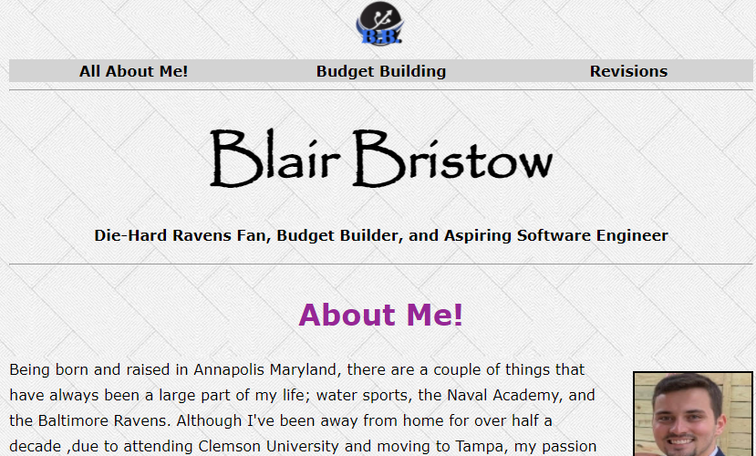
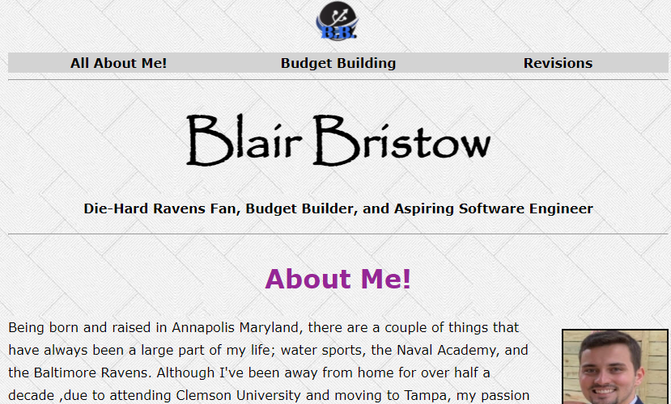
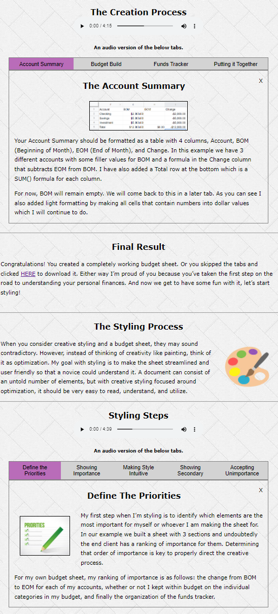

Site Revisions
The first person I asked to review my website was my wife. As a CPA, she has a great depth of experience with document and site portal layouts. This was part of my original budget building page:

She identified two issues:
- Without a header, the tab bar was not distinguished enough from the introductory paragraph.
- Having all of the tabs closed when the page was first loaded didn't show her how the tabs worked. Instead she had to figure it out herself and if she was just scrolling she could easily miss the tab bar in its entirety.
I then took her suggestions and edited the page to have a header and to have the Account Summary tab open on page load.

I also added in a line segment to further the disctinction and then replicated this styling for the later sections on the page.
The second person I asked to review my site was my older brother, a software developer at Capital One. He pointed out that my header was slightly off center and didnt have any indication that they were links. (I decided to use a different picture later as well which was suggestions by my mom as a part of her review).
 

I took this advice and switched from using an unordered list element to a table tag which after styling proprly centered the links. I also added a gray background and a hover color change to make them appear more like buttons. The background color was a suggestion from my younger brother, as was the changing of the color of the main header on each page to purple for improved readability.
My final major revision came from my dad. He, as a self described "old man", thought that having one of the tabs on the first bar being open was great, but also thought that it needed to be repeated on the second tab bar. This was so "other old people like (him) would get it". He also pointed out that my links to different webpages would work better if they opened in a new tab which was easily accomplished.
This was the most challenging edit yet. JavaScript is still relatively new to me so I drew on my past experience with Python for help. Relying on my familiarity with Inheritance and classes, as well as a large amount of troubleshooting, I was able to split the two tab bars into different groups and more efficiently set up the JS.
In my original code, the tabs were in the same "group" and when a click occured all tabs were cleared and set to be unviewable before the clicked tab was then displayed. Now, there are two tab groups and when a tab is clicked only other tabs in the group are affected by the clearing before the clicked tab is then opened.
Also changed in this screenshot is the position and text within the tab headers. This was another suggestion from my younger brother and was spurred by him viewing it on his Samsung phone, somthing I didn't have physical access to. By centering the text and making each tab account for 1/x% of the width, readability and general presentation was improved. I also added a fifth tab with some additional content at a later point and audio files reading out the content of each tab group.